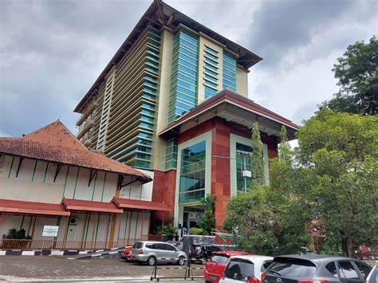

PROFIL PERPUSTAKAAN UNIVERSITAS
1. PERPUSTAKAAN UNIVERSITAS BRAWIJAYA
Pada tahun 2009 gedung perpustakaan yang baru telah dibangun seluas 4.320 m2, sehingga luas gedung perpustakaan menjadi 8.520 m2 yang merupakan perluasan dari gedung yang lama. Perpustakaan menempati gedung lantai I dan lantai II.
Jl. Veteran Malang, 65145.
Telp: + 62 341 551611.
Fax : + 62 341 565420.
WA : + 62 82231517409.
2. PERPSTAKAAN UIN SUNAN KALIJAGA

Perpustakaan Universitas Islam Negeri (UIN) Sunan Kalijaga Yogyakarta merupakan sumber belajar dan sumber intelektual yang amat penting bagi sivitas akademika terutama dalam mendukung tercapainya program Tri Dharma Perguruan Tinggi.
Jl. Marsda Adisucipto Yogyakarta 55281
Telp : + 0274-548635
Fax : + 0274-552231
Email: lib[et]uin-suka.ac.id
3. PERPUSTAKAAN UNIVERSITAS SEBELAS MARET
tanggal 14 Agustus 1980, No. 134/PT.40/ C/1980 didirikanlah UPT (Unit Pelaksana Teknis).Selanjutnya, merujuk Permendikbud No. 82 tahun 2014 tentang SOTK UNS, UPT Perpustakaan menjadi salah salah satu Unit Pelaksana Teknis yang bertugas memberikan layanan kepustakaan.
Jalan Raya Bandung-Sumedang Km. 21 Jatinangor, Kab. Sumedang 45363 Jawa Barat
Phone Number : +62271-646994
Fax Number : +62271-663485
Email : lppmp@mail.uns.ac.id